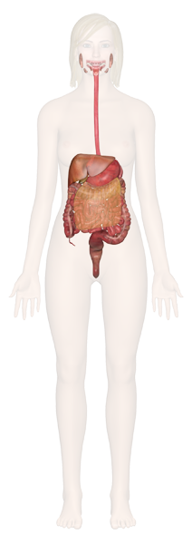

Mouth
Food begins its journey through the digestive system in the mouth, also known as the oral cavity. Inside the mouth are many accessory organs that aid in the digestion of food—the tongue, teeth, and salivary glands. Teeth chop food into small pieces, which are moistened by saliva before the tongue and other muscles push the food into the pharynx.Oral cavity, cross-section
Pharynx
The pharynx, or throat, is a funnel-shaped tube connected to the posterior end of the mouth. The pharynx is responsible for the passing of masses of chewed food from the mouth to the esophagus. The pharynx also plays an important role in the respiratory system, as air from the nasal cavity passes through the pharynx on its way to the larynx and eventually the lungs. Because the pharynx serves two different functions, it contains a flap of tissue known as the epiglottis that acts as a switch to route food to the esophagus and air to the larynx
Esophagus
The esophagus is a muscular tube connecting the pharynx to the stomach that is part of the upper gastrointestinal tract. It carries swallowed masses of chewed food along its length. At the inferior end of the esophagus is a muscular ring called the lower Stomach, gallbladder and pancreasesophageal sphincter or cardiac sphincter. The function of this sphincter is to close of the end of the esophagus and trap food in the stomach.
Stomach
The stomach is a muscular sac that is located on the left side of the abdominal cavity, just inferior to the diaphragm. In an average person, the stomach is about the size of their two fists placed next to each other. This major organ acts as a storage tank for food so that the body has time to digest large meals properly. The stomach also contains hydrochloric acid and digestive enzymes that continue the digestion of food that began in the mouth.
Small Intestine
The small intestine is a long, thin tube about 1 inch in diameter and about 10 feet long that is part of the lower gastrointestinal tract. It is located just inferior to the stomach and takes up most of the space in the abdominal cavity. The entire small intestine is coiled like a hose and the inside surface is full of many ridges and folds. These folds are used to maximize the digestion of food and absorption of nutrients. By the time food leaves the small intestine, around 90% of all nutrients have been extracted from the food that entered it.
Liver and Gallbladder
The liver is a roughly triangular accessory organ of the digestive system located to the right of the stomach, just inferior to the diaphragm and superior to the small intestine. The liver weighs about 3 pounds and is the second largest organ in the body. The liver has many different functions in the body, but the main function of the liver in digestion is the production of bile and its secretion into the small intestine. The gallbladder is a small, pear-shaped organ located just posterior to the liver. The gallbladder is used to store and recycle excess bile from the small intestine so that it can be reused for the digestion of subsequent meals.
Pancreas
The pancreas is a large gland located just inferior and posterior to the stomach. It is about 6 inches long and shaped like short, lumpy snake with its “head” connected to the duodenum and its “tail” pointing to the left wall of the abdominal cavity. The pancreas secretes digestive enzymes into the small intestine to complete the chemical digestion of foods.
Large Intestine
The large intestine is a long, thick tube about 2 ½ inches in diameter and about 5 feet long. It is located just inferior to the stomach and wraps around the superior and lateral border of the small intestine. The large intestine absorbs water and contains many symbiotic bacteria that aid in the breaking down of wastes to extract some small amounts of nutrients. Feces in the large intestine exit the body through the anal canal.